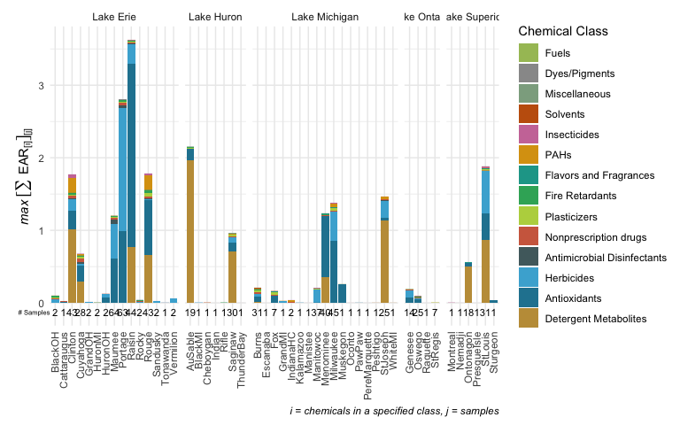

The toxEval R-package includes a set of functions to analyze, visualize, and organize measured concentration data as it relates to https://www.epa.gov/chemical-research/toxicity-forecasting or other user-selected chemical-biological interaction benchmark data such as water quality criteria. The intent of these analyses is to develop a better understanding of the potential biological relevance of environmental chemistry data. Results can be used to prioritize which chemicals at which sites may be of greatest concern. These methods are meant to be used as a screening technique to predict potential for biological influence from chemicals that ultimately need to be validated with direct biological assays.
The functions within this package allow great flexibly for exploring the potential biological affects of measured chemicals. Also included in the package is a browser-based application made from the Shiny R-package (the app). The app is based on functions within the R-package and includes many convenient analyses and visualization options for users to choose. Use of the functions within the R-package allows for additional flexibility within the functions beyond what the app offers and provides options for the user to interact more directly with the data. The overview in this document focuses on the R-package.
Quickstart

Installation instructions are below. To quickly get going in toxEval, run:
library(toxEval) explore_endpoints()
Then click on the “Load Example Data” in the upper right corner. This loads the example data that is found here:
file.path(system.file("extdata", package="toxEval"), "OWC_data_fromSup.xlsx")
Once the data is loaded in the app, sample R code is shown below each tab. This can be copied into the R console (once the app is stopped…) to use as a base for exploring the package directly in R.
Alternatively, an example workflow is shown here (also using example data provided in the package):
library(toxEval) #> USGS Research Package: #> https://owi.usgs.gov/R/packages.html#research #> ToxCast database: version 3.2 path_to_file <- file.path(system.file("extdata", package="toxEval"), "OWC_data_fromSup.xlsx") tox_list <- create_toxEval(path_to_file) ACClong <- get_ACC(tox_list$chem_info$CAS) ACClong <- remove_flags(ACClong) cleaned_ep <- clean_endPoint_info(end_point_info) filtered_ep <- filter_groups(cleaned_ep, groupCol = 'intended_target_family', remove_groups = c('Background Measurement','Undefined')) chemicalSummary <- get_chemical_summary(tox_list, ACClong, filtered_ep) ###################################### chem_class_plot <- plot_tox_boxplots(chemicalSummary, category = 'Chemical Class') chem_class_plot
###################################### plot_stacks <- plot_tox_stacks(chemicalSummary, tox_list$chem_site, category = "Chemical Class") plot_stacks

###################################### plot_heat <- plot_tox_heatmap(chemicalSummary, tox_list$chem_site, category = "Chemical Class", font_size = 7) plot_heat
This code opens up the example file, loads it into a toxEval object, grabs the pertinent ToxCast information, and creates a “chemicalSummary” data frame that is used in many of the plot and table functions.
There are 4 vignettes to help introduce and navigate the toxEval package:
| Name | R command | Description |
|---|---|---|
| Introduction |
vignette(“Introduction”, package=“toxEval”)
|
Introduction to the toxEval |
| Basic Workflow |
vignette(“basicWorkflow”, package=“toxEval”)
|
Quickstart guide to get overview of available functions |
| Prepare Data |
vignette(“PrepareData”, package=“toxEval”)
|
Guide to preparing your data for toxEval analysis |
| Shiny App Guide |
vignette(“shinyApp”, package=“toxEval”)
|
Guide to the toxEval shiny application |
Reporting bugs
Please consider reporting bugs and asking questions on the Issues page: https://github.com/USGS-R/toxEval/issues
Follow @USGS_R on Twitter for updates on USGS R packages:

Code of Conduct
We want to encourage a warm, welcoming, and safe environment for contributing to this project. See the code of conduct for more information.
Package Support
The Water and Environmental Health Mission Areas of the USGS, as well as the Great Lakes Restoration Initiative (GLRI) has supported the development of the toxEval R-package. Further maintenance is expected to be stable through September 2019. Resources are available primarily for maintenance and responding to user questions. Priorities on the development of new features are determined by the toxEval development team.

Installation of R and RStudio
This section should only need to be done once per computer.
The following link walks you through an installation of R and RStudio:
Useful links:
Installation of toxEval
To install the toxEval package, you must be using R 3.0 or greater and run the following command:
install.packages("toxEval")
To get cutting-edge changes, install from GitHub using the devtools packages:
library(devtools) install_github("USGS-R/toxEval", build_vignettes = TRUE, build_opts = c("--no-resave-data", "--no-manual"))
Regularly, it is a good idea to update ALL your packages in R. If using RStudio, this is quite easy, there’s an Update button in the “Packages” tab. This checks CRAN and GRAN for updates. It is a good idea to click this update regularly.

Run toxEval
To run the toxEval app:
- Open RStudio
- In the Console (lower-left window of RStudio) paste the following:
library(toxEval) explore_endpoints()
Citing toxEval
citation(package = "toxEval") #> #> To cite toxEval in publications, please use: #> #> De Cicco, L.A., Corsi, S.R., Villeneuve D.L, Blackwell, and B.R, #> Ankley, G.T., 2020, toxEval: Evaluation of measured concentration #> data using the ToxCast high-throughput screening database or a #> user-defined set of concentration benchmarks. R package version #> 1.2.0., https://code.usgs.gov/water/toxEval, doi:10.5066/P906UQ5I #> #> A BibTeX entry for LaTeX users is #> #> @Manual{, #> author = {Laura A. {De Cicco} and Steven R. Corsi and Daniel L. Villeneuve and Brett R. Blackwell and Gerald T. Ankley}, #> title = {toxEval: Evaluation of measured concentration data using the ToxCast high-throughput screening database or a user-defined set of concentration benchmarks.}, #> publisher = {U.S. Geological Survey}, #> version = {1.2.0}, #> address = {Reston, VA}, #> institution = {U.S. Geological Survey}, #> year = {2020}, #> doi = {10.5066/P906UQ5I}, #> url = {https://code.usgs.gov/water/toxEval}, #> }
Disclaimer
This software has been approved for release by the U.S. Geological Survey (USGS). Although the software has been subjected to rigorous review, the USGS reserves the right to update the software as needed pursuant to further analysis and review. No warranty, expressed or implied, is made by the USGS or the U.S. Government as to the functionality of the software and related material nor shall the fact of release constitute any such warranty. Furthermore, the software is released on condition that neither the USGS nor the U.S. Government shall be held liable for any damages resulting from its authorized or unauthorized use.